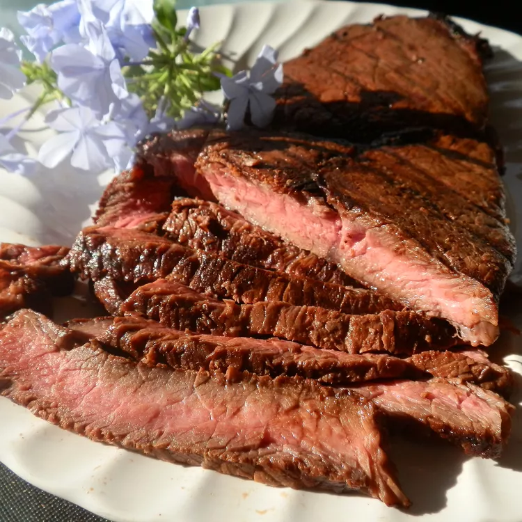

Butter Basted steak

Description
A butter basted steak is a culinary dish, often described buy it's rich flavors and tender meat.
The dish features salt, pepper and garlic for the seasoning, and is butter basted for the increased
flavors. The dish also includes Rosmery and Thyme too boost the aromatic flavors of the steak, providing
a nice addition to the juicy steak flavor. This recipe is great for steak lovers who like something nice
and simple to make.
Ingridents
- Sirloin 1 pound steak
- 1 teaspoon of salt
- 1/2 teaspoon of freshly ground pepper
- 4 cloves of crushed garlic
- 3-4 teaspoons of butter
- Rosmery or Thyme
- vegetable oil
Steps
- Salt the steaks on both sides, and leave out for 30 minutes too marinate
- After 30 minutes, get a cast iron, and put on high heat
- Put vegetable oil into the pan, until hot
- After, put the steak in for 3 minutes on each side, or until golden brown color of steak
- After flipping the first time lower, heat and add butter, and garlic into pan
- Using a spoon, take the butter from the pan and put it on top until internal temperature is 130F
- After, take out and let it rest for 10 minutes before serving